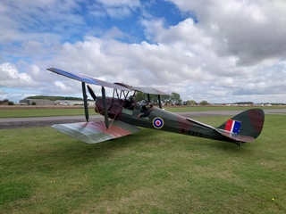
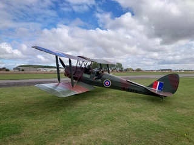

Tiger Moth Academy
 

If you have ever wanted to try open cockpit flying, or experience taking the controls of a genuine WWII Royal Air Force trainer, NOW IS YOUR OPPORTUNITY TO DO SO AT BREIGHTON AIRFIELD.
Flights
- Trial flights — experience the excitement of open cockpit flying.
- Fly past — make your event special by having a classic 1930s vintage biplane fly over your venue. Email alison@tigermothacademy.co.uk to secure your date.
- Training — through York Flying School we are able to offer a variety of courses using the Tiger Moth, these include conversion, taildragging, aerobatic and NPPL training. Book direct at York Flying School
Contact
Contact us by one of: